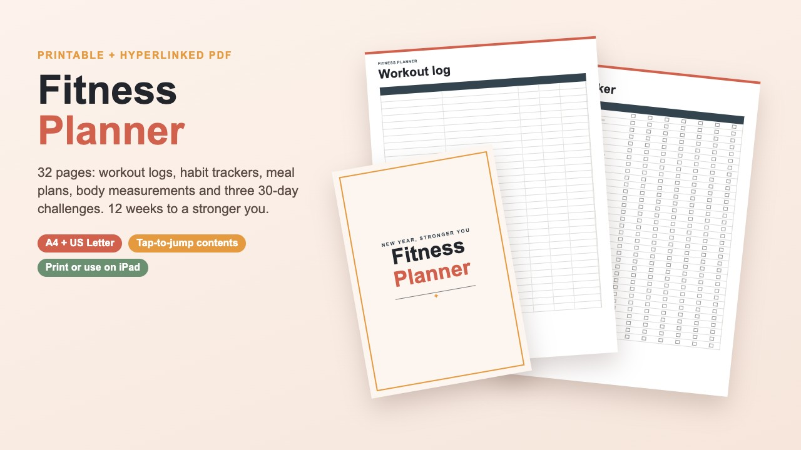
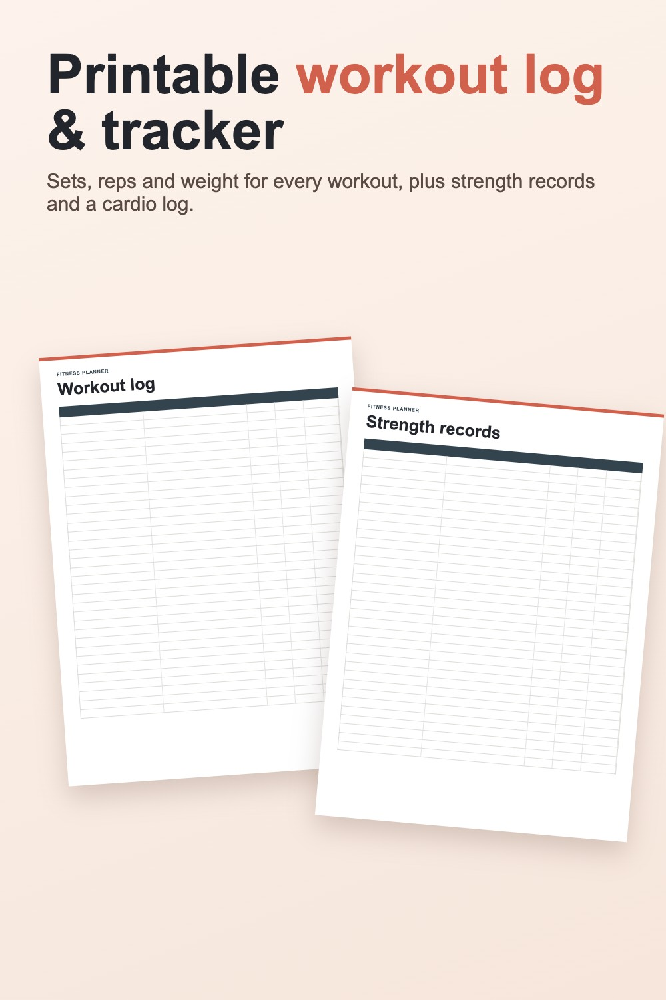

Fitness Planner Printable
Keep your New Year fitness goals past February. 32 pages for 12 weeks: plan every workout, track your habits and meals, and see your progress in numbers.
Get the fitness planner, $8

What's inside
- Start: how to use it, my why and goals, body measurements with progress photo notes
- Plan: 12-week overview, weekly workout schedule
- Workouts: 4 workout logs (sets, reps, weight and cardio), strength records, cardio log, no-equipment home workout and stretches
- Habits: 2 monthly habit trackers, water and sleep tracker, 12-week step tracker
- Food: weekly meal plan, 2 food diary pages, healthy grocery list
- Challenges: 30-day squat, plank and walking challenges
- Progress: weight tracker, 3 monthly check-ins, reward chart

How to stick to a New Year fitness goal
1. Write down why you started
Most resolutions stop in the third week, when motivation drops. A clear reason on paper is what you come back to on that day.
2. Measure where you start
Weight is only one number. Waist, hips, a progress photo and how many push-ups you can do show change even when the scale does not move.
3. Plan the week on Sunday
Choose your workout days and prep a few meals. A plan on paper beats willpower on a busy Wednesday.
4. Log every workout and beat it a little
Write the sets, reps and weight. Next week, add one rep or a little weight. Small steps add up over 12 weeks.
5. Track habits, not only results
Water, sleep, steps and workouts are what move the result. Tick them every day on the habit tracker and check in once a month.
Details
- Two PDFs: A4 and US Letter
- Hyperlinked contents for GoodNotes, Notability or any PDF reader
- Undated: start any week and reprint as often as you like
- Instant download, for personal use
Get the fitness planner
Want to try it first? Download the free workout and habit tracker. All products: printables and templates.